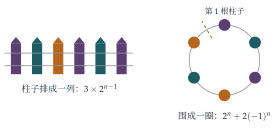

STEP II 1995，第 2 题
继续之前，请先阅读题目（原题为英文）。题目载于 STEP Support Programme 的题目资料库： step.maths.org/questions/95-s2-q2
引子
为排成一列的柱子髹色很容易：第一根有 \(3\) 种选择，其后每根各有 \(2\) 种（只要不与前一根同色即可），共有 \(3 \times 2^{n-1}\) 种髹法。把这一列弯成一个圆圈，问题却变得出奇地棘手，因为最后一根柱子既要与相邻的前一根不同色，又要与第一根不同色，而这究竟排除了一种颜色还是没有排除任何颜色，取决于前面所有柱子的髹法。
题目用一个经典技巧绕过这个难处：按最后一根柱子的颜色把计数分成几种情况，再找出各种情况之间如何互相转化。答案 \(2^n + 2(-1)^n\) 是色多项式（chromatic polynomial）的第一个例子，而色多项式正是四色定理（four colour theorem）背后的数学的一部分。
动笔之前
数一数为围成一圈的 \(3\) 根柱子髹色有多少种方法，\(4\) 根又有多少种。\(3 \times 2^{n-1}\) 有没有多算？多算了多少？
围成一圈的三根柱子两两相邻，所以需要三种不同的颜色：共 \(3! = 6\) 种方法。围成一圈的四根柱子：\(18\) 种方法（你可以在最后验证这一点）。与排成一列时的 \(3 \times 2^2 = 12\) 和 \(3 \times 2^3 = 24\) 比较：圆圈少了的，正是最后一根柱子与第一根同色的那些着色。
逐步解题
阶段 1 两类着色
考虑 \(n + 1\) 根柱子的一种着色（colouring），其中第一根和最后一根都是红色。把最后一根柱子拿走。余下的首 \(n\) 根柱子的着色有甚么特点？
第 \(n\) 根柱子与第 \(n + 1\) 根相邻，而后者是红色，所以第 \(n\) 根不是红色。拿走第 \(n + 1\) 根后，剩下的是 \(n\) 根柱子的一种着色，其中第一根是红色而最后一根不是红色：这正是 \(s_n\) 种着色之一。反过来，\(s_n\) 种着色中的任何一种都恰好有一种方法延伸，就是把第 \(n + 1\) 根柱子髹成红色。所以两个集合完全对应，\(r_{n+1} = s_n\)。
\(r_n + s_n\) 是甚么？
每一种第一根柱子为红色的着色，其最后一根柱子不是红色就是非红色，所以 \(r_n + s_n\) 数的是 \(n\) 根柱子中第一根为红色的全部着色。第一根之后，每根柱子有 \(2\) 种选择，所以 \(r_n + s_n = 2^{n-1}\)。因此 \[r_{n+1} + r_n = s_n + r_n = 2^{n-1}. \qed\]
阶段 2 用数学归纳法（induction）证明公式
当 \(n = 1\) 时只有一根柱子，髹成红色，所以 \(r_1 = 1\)，而公式给出 \(\frac13(1 + 2) = 1\)。假设公式对 \(r_n\) 成立。那么 \[r_{n+1} = 2^{n-1} - r_n = 2^{n-1} - \frac{2^{n-1} + 2(-1)^{n-1}}{3} = \frac{2 \cdot 2^{n-1} - 2(-1)^{n-1}}{3} = \frac{2^n + 2(-1)^n}{3},\] 这正是 \(r_{n+1}\) 的公式。■
这条公式从何而来？递归关系（recurrence relation）\(r_{n+1} + r_n = 2^{n-1}\) 就像一条微分方程（differential equation）：解是一个“特解”（particular solution）\(c \cdot 2^n\) 加上一个满足 \(r_{n+1} + r_n = 0\) 的“余函数”（complementary function）\(A(-1)^n\)。求 \(c\) 和 \(A\)。
阶段 3 圆圈
在 \(n\) 根柱子围成的圆圈中，固定第 \(1\) 根柱子的颜色，例如红色。现在在第 \(n\) 根与第 \(1\) 根柱子之间把圆圈剪开，拉直成一列。哪些直列着色对应于合乎要求的圆圈着色？
拉直之后，圆圈变成由红色开始的一列 \(n\) 根柱子，其中最后一根还必须与第 \(1\) 根不同色：最后一根不是红色。这些正好就是那 \(s_n\) 种着色。第 \(1\) 根柱子可以是 \(3\) 种颜色中的任何一种，所以圆圈着色的数目是 \[3s_n = 3(2^{n-1} - r_n) = 3 \cdot 2^{n-1} - 2^{n-1} - 2(-1)^{n-1} = 2^n + 2(-1)^n. \qed\] 验算：\(n = 3\) 给出 \(8 - 2 = 6\)，而 \(n = 4\) 给出 \(16 + 2 = 18\)。

回顾
分成互相转化的情况。记下最后一根柱子是否红色，便得到两个数列 \(r_n\) 和 \(s_n\)，它们由简单的递归关系联系起来。
双射（bijection）。\(r_{n+1} = s_n\) 是靠把着色一一配对来证明的，而不是靠计算。
剪开圆圈。一个循环的问题变成了一个对两端附加条件的直线问题。
背后的数学
色多项式
柱子和它们之间的相邻关系构成一个图（graph）：排成一列时是一条路径（path），围成一圈时是一个圈（cycle）。正常着色（proper colouring）给相邻的顶点（vertex）不同的颜色。用 \(k\) 种颜色的正常着色数目是 \(k\) 的一个多项式，称为该图的色多项式，由伯克霍夫（George Birkhoff）于 1912 年引入。用 \(k\) 种颜色重复题目中的论证，可得 \[\text{路径：} k(k - 1)^{n-1}, \qquad \text{圈：} (k - 1)^n + (-1)^n(k - 1).\] 取 \(k = 3\)，圈的公式就是 \(2^n + 2(-1)^n\)。伯克霍夫希望通过证明每幅地图所对应的图的色多项式在 \(k = 4\) 时为正数，从而证明四色定理（每幅地图都可以用四种颜色着色，使相邻的国家颜色不同）。这个方法始终未能成功；定理最终在 1976 年由阿佩尔（Kenneth Appel）和哈肯（Wolfgang Haken）借助大量电脑运算证明。色多项式至今仍是一个活跃的研究领域，并与统计物理（statistical physics）有出人意表的联系：在那里它们以描述磁性的波茨模型（Potts model）的形式出现。
用矩阵数出同一个答案
还有另一种方法可以看出答案，用的是第 7 章的线性代数（linear algebra）。设 \(\mathbf{M}\) 为对角线上是 \(0\)、其余位置是 \(1\) 的 \(3 \times 3\) 矩阵：当颜色 \(j\) 可以跟在颜色 \(i\) 之后时，第 \((i, j)\) 项为 \(1\)。那么 \(\mathbf{M}^{n-1}\) 的第 \((i, j)\) 项数的是由颜色 \(i\) 开始、以颜色 \(j\) 结束的直列着色，所以 \(r_n\) 是 \(\mathbf{M}^{n-1}\) 的一个对角线项。圆圈着色是经过 \(n\) 步后回到起点的一个序列，所以圆圈着色的数目就是 \(\mathbf{M}^n\) 的迹（trace）。由于 \(\mathbf{M} = \mathbf{J} - \mathbf{I}\)，其中 \(\mathbf{J}\) 的每一项都是 \(1\)，\(\mathbf{M}\) 的特征值（eigenvalue）是 \(3 - 1 = 2\)（特征向量（eigenvector）为 \((1, 1, 1)\)）和 \(-1\)（两重），而 \(\mathbf{M}^n\) 的迹是各特征值的 \(n\) 次方之和： \[\operatorname{tr}\mathbf{M}^n = 2^n + (-1)^n + (-1)^n = 2^n + 2(-1)^n.\] 这种转移矩阵（transfer matrix）方法在组合数学（combinatorics）和统计物理中随处可见，用来数算逐步构造出来的排列。
思维技巧
当一个数列单靠自己无法满足简单的递归关系时，不妨多记录一点资料（这里是最后一根柱子的颜色），再找出联系各种情况的递归关系。
这就是状态（state）的概念：只记下继续下去所必须知道的资料，不多也不少。它是电脑科学中动态规划（dynamic programming）的基础，也是概率中马可夫链（Markov chains）（第 12.16 节）和转移矩阵方法的基础。
延伸练习
\(k\) 种颜色。用 \(k\) 种颜色重做这道题。证明 \(r_{n+1} = s_n\) 仍然成立，并且 \(r_{n+1} + r_n = (k-1)^{n-1}\)，求 \(r_n\)，并由此推导出圈的色多项式 \((k - 1)^n + (-1)^n(k - 1)\)。
没有两根红柱相邻。把排成一列的 \(n\) 根柱子髹成红色或白色，而且没有两根相邻的柱子同为红色，共有多少种方法？（你应该会得到斐波那契数（Fibonacci numbers）。）
轮子。加一根位于中心的柱子，与圆圈上的每根柱子都相邻（一个“轮子”）。用 \(4\) 种颜色为它着色有多少种方法？（提示：中心用去一种颜色，圆圈必须使用其余三种。）
项链。如果圆圈的两种着色在其中一种可由另一种旋转而得时视为相同，那么当 \(n = 4\) 时有多少种不同的着色？\(n = 5\) 时呢？（这是伯恩赛德引理（Burnside’s lemma）的开端。）
延伸阅读
Robin Wilson, Introduction to Graph Theory（Pearson）。标准的图论入门教材；涵盖着色和四色问题。
Robin Wilson, Four Colours Suffice（Penguin）。四色定理的故事，为一般读者而写。
Herbert Wilf, generatingfunctionology（可在网上免费阅读）。讲述递归关系及其解法，包括转移矩阵方法。